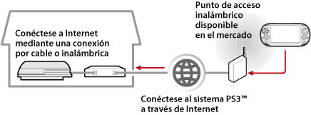

Red > Utilización de la función de uso a distancia (a través de Internet)
Utilización de la función de uso a distancia (a través de Internet)
Para utilizar esta función en un sistema PS Vita o en un sistema PSP™, es posible que se le solicite la actualización del software del sistema en el sistema PS3™ y el sistema PS Vita o el sistema PSP™.
Si utiliza un dispositivo que admita la función de uso a distancia (como un sistema PS Vita o un sistema PSP™) y un punto de acceso inalámbrico, podrá conectarse al sistema PS3™ a través de Internet. Para utilizar la función de uso a distancia, el sistema PS3™ debe ajustarse en modo de espera de conexión del uso a distancia.

Nota
El método de utilización de un servicio de punto de acceso inalámbrico (LAN inalámbrica) disponible en el mercado y las tarifas correspondientes a dichos usos varían en función del proveedor de servicios. Para obtener más información, póngase en contacto con el proveedor de servicios.
Preparación (1) (sistema PS3™ y el dispositivo que admita la función de uso a distancia)
Para utilizar la función de uso a distancia por primera vez, debe registrar (emparejar) el dispositivo que admite el uso a distancia, como un sistema PS Vita o un sistema PSP™, con el sistema PS3™. Para registrar (emparejar) el sistema, seleccione  (Ajustes) >
(Ajustes) >  (Ajustes de uso a distancia) > [Registrar dispositivo].
(Ajustes de uso a distancia) > [Registrar dispositivo].
Preparación (2) (dispositivo que admite la función de uso a distancia)
Cree una conexión de red para conectar el sistema PS Vita o el sistema PSP™ a un punto de acceso. Para utilizar la función de uso a distancia a través de Internet, puede utilizar un punto de acceso inalámbrico. Para obtener más información sobre los ajustes de red en un dispositivo que admite el uso a distancia, consulte el manual de instrucciones suministrado con dicho dispositivo.
El uso a distancia en un sistema PS Vita
1. |
En el sistema PS3™, seleccione |
|---|
 (Red) >
(Red) >  (Uso a distancia).
(Uso a distancia).2. |
En el sistema PS Vita, toque |
|---|
 (Uso a distancia de PS3) > [Inicio].
(Uso a distancia de PS3) > [Inicio].3. |
Toque [Conectarse mediante Internet]. |
|---|
Notas
- Durante el uso a distancia, si va a la pantalla de otra aplicación, la conexión de uso a distancia se cierra después de 30 segundos.
- En el sistema PS Vita, vincule la cuenta de Sony Entertainment Network que utiliza en el sistema PS3™. Si ha creado una cuenta en el sistema PS Vita o en un ordenador, también puede utilizar esa cuenta en el sistema PS3™.
Uso de uso a distancia en un sistema PSP™
1. |
En el sistema PS3™, seleccione |
|---|---|
2. |
En el sistema PSP™, seleccione |
3. |
Seleccione [Conectarse mediante Internet]. |
4. |
En la lista de conexiones, seleccione la conexión al punto de acceso que vaya a utilizar para el uso a distancia. |
5. |
Introduzca el ID de inicio de sesión y la contraseña de Sony Entertainment Network para la cuenta en uso. |
 (Uso a distancia).
(Uso a distancia).Uso a distancia a través de Internet
Es posible que no pueda utilizar el uso a distancia a través de Internet en función del dispositivo de red que utilice. En tal caso, compruebe la siguiente información.
- Utilice [Prueba de conexión a Internet] en
 (Ajustes de red) de (Ajustes) para comprobar si el sistema PSP™ puede conectarse a Internet y a PSNSM.
(Ajustes de red) de (Ajustes) para comprobar si el sistema PSP™ puede conectarse a Internet y a PSNSM. - Si el router utilizado es compatible con UPnP, active la función UPnP de éste.
- Si el router utilizado no admite la función UPnP, es necesario ajustar la función de reenvío de puertos del router para permitir la comunicación al sistema PS3™ desde Internet. El número de puerto utilizado por el uso a distancia es TCP:9293. Para obtener más información acerca del ajuste de esta opción, consulte las instrucciones suministradas con el router.
- El reenvío de puertos es una función que sirve para reenviar señales que llegan a un puerto específico (entrada) a otro puerto específico (salida). A este proceso también se le conoce como "asignación de puertos" o "conversión de dirección".
- Si el sistema PS3™ está conectado a Internet a través de dos o más routers, es posible que no pueda establecerse la comunicación.
Notas
- Un router es un dispositivo que permite que varios dispositivos compartan una misma línea de conexión a Internet.
- Es posible que la comunicación esté restringida dependiendo de las funciones de seguridad de que disponga el router y ofrezca el proveedor de servicios de Internet. Consulte las instrucciones suministradas con el dispositivo de red y la información de su proveedor de servicios de Internet.